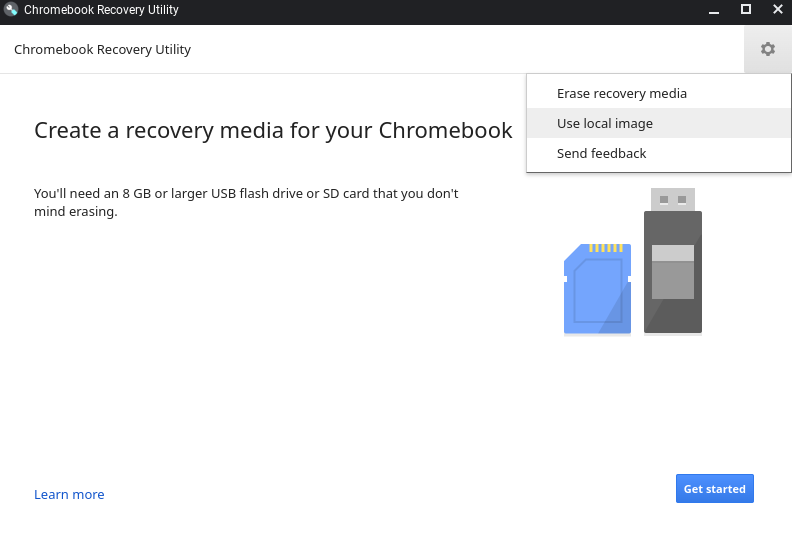
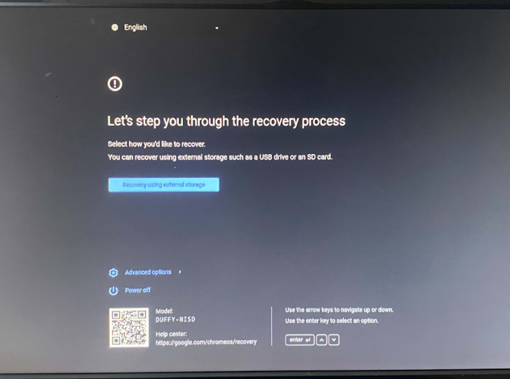
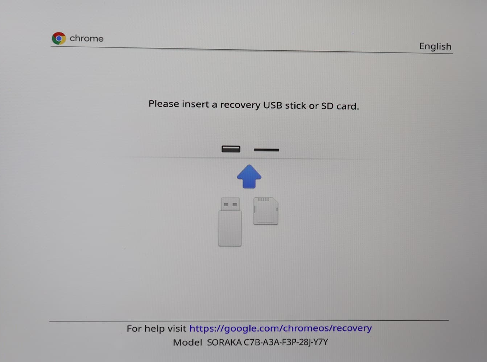
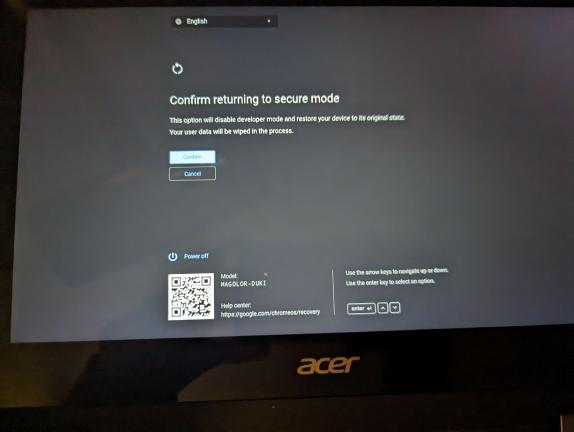
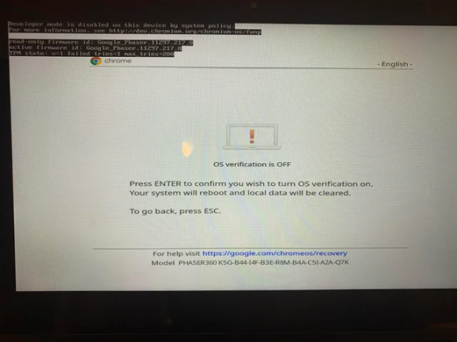
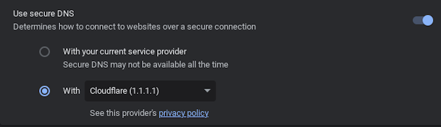
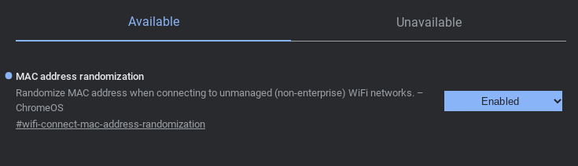

What you will need
- A USB drive with at least 8 GB of storage
- A personal computer or Chromebook; note that you need admin perms on Windows/MacOS
Flashing a USB
First, you'll need to find your managed Chromebook's board name. This can be done by going to chrome://version on your Chromebook and copying the word after stable-channel, or with a variety of other methods.
If your board name is in the list below, your board has a publicly leaked RMA shim. If it's not, you'll have to source it on your own... somehow.
ambassador, brask, brya, clapper, coral, corsola, dedede, enguarde, glimmer, grunt, hana, hatch, jacuzzi, kukui, lulu, nami, octopus, orco, pyro, reks, sentry, stout, strongbad, tidus, ultima, volteer, zork
First you need to download a SH1MMER bin at
dl.sh1mmer.me
Then build an injected shim using your bin at the
SH1MMER Web Builder
Once you've obtained a INJECTED SHIM (NOT A RAW SHIM), you can continue.
Download the Chromebook Recovery Utility extension on your personal computer as well.
Once the downloads are complete, launch the recovery utility and plug your USB drive into your personal computer.
IMPORTANT: Your USB drive will be completely erased and partitioned.In the recovery utility window, click the settings icon and press "Use local image".
Select your shim file, identify your USB drive, and start the writing process. This can take anywhere between 30 seconds and 20 minutes, depending on the speed of your USB drive.
You can also use tools such as Rufus, BalenaEtcher, etc, to flash on Windows. If you're on Linux, dd is recommended.Executing on Chromebook
Once writing is complete, enter recovery mode on your Chromebook. This is done by pressing the power button (⏻), reload key (↻), and ESC key at the same time. Your screen should look one of the images below:
 Press CTRL + D on this screen, then press enter.
It will now say something about "returning to secure mode" or that "OS verification is off". You will not actually be in developer mode, but the exploit will work regardless. Your screen should look like one of the images below:
 On this screen, press the power button (⏻), reload key (↻), and ESC key at the same time again! This is very important and cannot be skipped.
Once it re-shows the original recovery screen, plug your shimmed USB drive into your Chromebook. After a brief black-and-white loading screen, you should be in the SH1MMER menu.

Play around with the UI, exit, and reboot.
What now?
You will now be able to, among other things, unenroll your Chromebook. It will now behave entirely as if it is a personal computer and no longer contain spyware or blocker extensions.
Note that while unenrolled, it is recommended to add your personal account first, then add your school account, then switch between the two as needed. Mercury Workshop does not condone the use of SH1MMER or unenrolling to cheat in school.
The biggest challenges with unenrolling are connecting to the school network and taking state or national exams (since there are no kiosk apps anymore).
There are many methods to get a school Wi-Fi password while enrolled, including the policy netlog trick. While on a school account and unenrolled, you can bypass some network-level blocks by using a secure DNS such as Cloudflare 1.1.1.1 from chrome://os-settings/osPrivacy. It is also recommended to enable "MAC Address Randomization" in chrome://flags to stay hidden.
 To take a kiosk exam, the safest option is to re-enroll temporarily. Instructions for doing that are hosted at this TXT file. Saving a copy of this file for future reference is probably a smart move.
You can also use fakemurk as a way to enroll your device but stay in developer mode and have control over policies and extensions. You may need to use this to get WiFi passwords if chrome://net-export is blocked.
The Fog...
(Google's response, and why this might not be working for you)
Downgrading and unenrollment has been patched* by google. If your chromebook has never updated to version 112 before (check in chrome://version), then you can ignore this and follow the normal instructions. If not, unenrollment will not work as normal.
If you aren't willing to take apart your chromebook to unenroll, you can use an affiliated project, E-HALCYON to boot into a deprovisioned environment temporarily.
There is also cryptosmite, which allows you to unenroll if you are on version v119 or earlier. It is possible to downgrade to v112 to unenroll if your Chromebook meets the requirements. This is currently the recommended method over E-HALYCON.
If you are willing to take apart your Chromebook to unenroll, then go to the guides here: Unpatch & Unfog